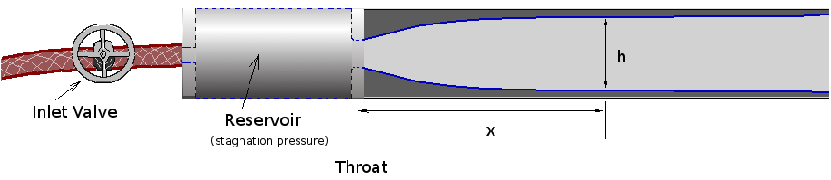

|  | ||||||||||||||||||||||||||||||||||||||||||||||||||||
|
| ||||||||||||||||||||||||||||||||||||||||||||||||||||
| For a more detailed description of the experimental set up
go to the Flow through Nozzles and Ducts pages. Return to the Nozzle Simulator main page. |
| |||||||||||||||||||||||||||||||||||||||||||||||||||
Virtual Supersonic Nozzle
Back to Top